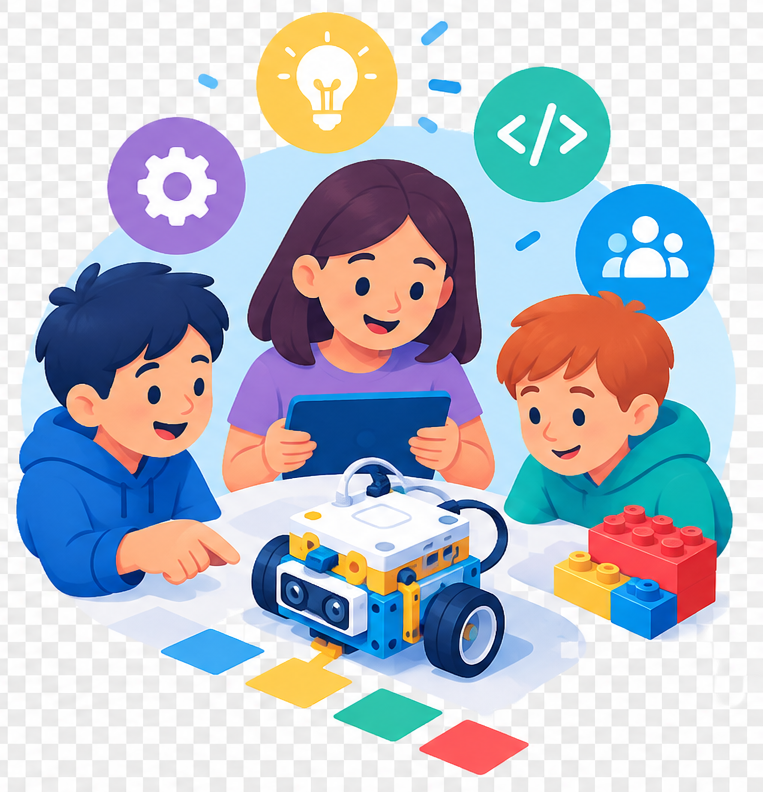

Situacions d'Aprenentatge
Propostes curriculars i reptes d'aula per connectar la robòtica i el pensament computacional amb contextos significatius.

Propostes curriculars i reptes d'aula per connectar la robòtica i el pensament computacional amb contextos significatius.
